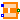
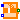

Components to be used in examples
Extends from Modelica.Icons.Package (Icon for standard packages).
| Name | Description |
|---|---|
|  SimpleSolenoid | Simple network model of a lifting magnet with planar armature end face |
|  AdvancedSolenoid | Advanced network model of a lifting magnet with planar armature end face, split magnetomotive force |
Simple network model of a lifting magnet with planar armature end face
Please refer to the Parameters section for a schematic drawing of this axisymmetric lifting magnet. In the half-section below, the flux tube elements of the actuator's magnetic circuit are superimposed on a field plot obtained with FEA. The magnetomotive force imposed by the coil is modelled as one lumped element. As a result, the radial leakage flux between armature and yoke that occurs especially at large working air gaps can not be considered properly. This leads to a a higher total reluctance and lower inductance respectively compared to FEA for large working air gaps (i.e., armature close to x_max). Please have a look at the comments associated with the individual model components for a short explanation of their purpose in the model.
The coupling coefficient c_coupl in the coil is set to 1 in this example, since leakage flux is accounted for explicitly with the flux tube element G_mLeakWork. Although this leakage model is rather simple, it describes the reluctance force due to the leakage field sufficiently, especially at large air gaps. With decreasing air gap length, the influence of the leakage flux on the actuator's net reluctance force decreases due to the increasing influence of the main working air gap G_mAirWork.
During model-based actuator design, the radii and lengths of the flux tube elements (and hence their cross-sectional areas and flux densities) should be assigned with parametric equations so that common design rules are met (e.g., allowed flux density in ferromagnetic parts, allowed current density and required cross-sectional area of winding). For simplicity, those equations are omitted in the example. Instead, the found values are assigned to the model elements directly.
| Name | Description |
|---|---|
| R | Armature coil resistance [Ohm] |
| N | Number of turns |
| r_yokeOut | Outer yoke radius [m] |
 | |
| r_yokeIn | Inner yoke radius [m] |
| l_yoke | Axial yoke length [m] |
| t_yokeBot | Axial thickness of yoke bottom [m] |
| l_pole | Axial length of pole [m] |
| t_poleBot | Axial thickness of bottom at pole side [m] |
| t_airPar | Radial thickness of parasitic air gap due to slide guiding [m] |
| Material | |
| material | Ferromagnetic material characteristics |
| Armature and stopper | |
| r_arm | Armature radius = pole radius [m] |
| l_arm | Armature length [m] |
| c | Spring stiffness between impact partners [N/m] |
| d | Damping coefficient between impact partners [N.s/m] |
| x_min | Stopper at minimum armature position [m] |
| x_max | Stopper at maximum armature position [m] |
| Name | Description |
|---|---|
| p | Electrical connector |
| n | Electrical connector |
| flange | Flange of component |
Advanced network model of a lifting magnet with planar armature end face, split magnetomotive force
Please have a look at SimpleSolenoid for a general description of this actuator. Unlike in that simple magnetic network model, the coil is split into two lumped elements here. This enables for more realistic modelling of the radial leakage flux between armature and yoke (leakage permeance G_mLeakRad). Especially for large air gaps, the influence of this leakage flux on the actuator's inductance and its electromagnetic force is rather strong. Please have a look at ComparisonQuasiStationary for a comparison of both models with FEA-based results included as reference.

The parasitic capacitances c_par1 and c_par2 across both partial coils assure that the voltages across these coils are well-defined during simulation.
| Name | Description |
|---|---|
| N | Number of turns |
| |
| R | Coil resistance [Ohm] |
| R_par | Resistance parallel to the coil, in series to C_par [Ohm] |
| C_par | Capacitance parallel to the coil, in series to R_par [F] |
| r_yokeOut | Outer yoke radius [m] |
| r_yokeIn | Inner yoke radius [m] |
| l_yoke | Axial yoke length [m] |
| t_yokeBot | Axial thickness of yoke bottom [m] |
| l_pole | Axial length of pole [m] |
| t_poleBot | Axial thickness of bottom at pole side [m] |
| t_airPar | Radial thickness of parasitic air gap due to slide guiding [m] |
| Material | |
| material | Ferromagnetic material characteristics |
| Armature and stopper | |
| r_arm | Armature radius = pole radius [m] |
| l_arm | Armature length [m] |
| c | Spring stiffness between impact partners [N/m] |
| d | Damping coefficient between impact partners [N.s/m] |
| x_min | Stopper at minimum armature position [m] |
| x_max | Stopper at maximum armature position [m] |
| Name | Description |
|---|---|
| p | Electrical connector |
| n | Electrical connector |
| flange | Flange of component |